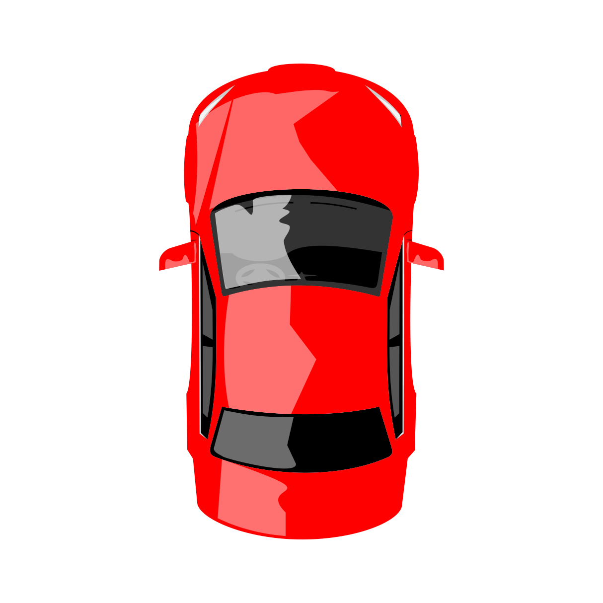

<!DOCTYPE html>
<html lang="id">
<head>
    <meta charset="UTF-8">
    <meta name="viewport" content="width=device-width, initial-scale=1.0, maximum-scale=1.0, user-scalable=no">
    <title>Peta Interaktif Sari Ater - Holden GPS Tracker</title>
    <!-- Masukkan CSS Leaflet -->
    <link rel="stylesheet" href="https://unpkg.com/leaflet@1.9.4/dist/leaflet.css" />
    <style>
        body, html {
            margin: 0;
            padding: 0;
            height: 100%;
            width: 100%;
            background-color: #0b1a0b;
        }
        #map {
            height: 100vh;
            width: 100vw;
        }
        /* Styling untuk Ikon Mobil Holden dengan efek Glow Biru */
        .holden-icon {
            background: rgba(0, 150, 255, 0.2);
            border-radius: 50%;
            box-shadow: 0 0 12px rgba(0, 150, 255, 0.8);
            display: flex;
            align-items: center;
            justify-content: center;
        }
    </style>
</head>
<body>

    <div id="map"></div>

    <!-- Masukkan JavaScript Leaflet -->
    <script src="https://unpkg.com/leaflet@1.9.4/dist/leaflet.js"></script>
    <script>
        // 1. Inisialisasi Peta dengan CRS.Simple agar gambar 2D presisi sebagai kanvas
        var map = L.map('map', {
            crs: L.CRS.Simple,
            minZoom: -3,
            maxZoom: 4,
            zoomControl: false
        });

        // 2. Sesuaikan ukuran piksel gambar masterplan Anda
        var w = 2000; 
        var h = 1143;
        var southWest = map.unproject([0, h], map.getMaxZoom());
        var northEast = map.unproject([w, 0], map.getMaxZoom());
        var imageBounds = new L.LatLngBounds(southWest, northEast);

        // 3. Masukkan Gambar Masterplan Sebagai Peta Utama
        var masterplanOverlay = L.imageOverlay('masterplan.png', imageBounds).addTo(map);
        
        // Memusatkan tampilan layar langsung ke tengah gambar masterplan dengan zoom yang pas
        var centerPoint = map.unproject([w / 2, h / 2], map.getMaxZoom());
        map.setView(centerPoint, 0);

        // 4. Membuat Ikon Kustom untuk Mobil Klasik Holden Kingswood
        var holdenIcon = L.divIcon({
            className: 'holden-icon',
            html: '',
            iconSize: [50, 50],
            iconAnchor: [25, 25]
        });

        // Menempatkan mobil tepat di tengah peta masterplan
        var carMarker = L.marker(centerPoint, {icon: holdenIcon}).addTo(map);
        carMarker.bindPopup("<b>Holden Kingswood Sari Ater</b><br>Kendaraan Wisata Interaktif").openPopup();

        // 5. Integrasi GPS Nyata (Menerjemahkan koordinat GPS ke piksel masterplan)
        if (navigator.geolocation) {
            navigator.geolocation.watchPosition(function(position) {
                var lat = position.coords.latitude;
                var lng = position.coords.longitude;
                
                // Konversi koordinat lapangan ke titik piksel masterplan
                var xMapped = (lng - 107.690) * 200000; 
                var yMapped = ( -6.740 - lat ) * 200000;
                
                var gpsPoint = map.unproject([xMapped, yMapped], map.getMaxZoom());
                carMarker.setLatLng(gpsPoint);
                
            }, function(error) {
                console.warn("GPS belum aktif: " + error.message);
            }, {
                enableHighAccuracy: true,
                maximumAge: 0,
                timeout: 5000
            });
        }

        // 6. Mengaktifkan Kompas Giroskop HP untuk Memutar Aset Mobil Holden
        if (window.DeviceOrientationEvent) {
            window.addEventListener('deviceorientation', function(event) {
                var compassHeading = event.alpha; // Arah kompas (0 - 360 derajat)
                if (compassHeading !== null) {
                    var carImg = document.getElementById('car-img');
                    if (carImg) {
                        carImg.style.transform = 'rotate(' + compassHeading + 'deg)';
                    }
                }
            }, true);
        }
    </script>
</body>
</html>